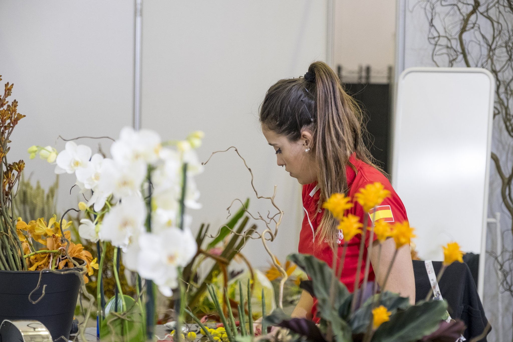

¿Le gustaría saber más?
- No dude en contactar con nuestro experto.
- Lorenzo@fpmislata.com

¿Le gustaría saber más?
La floristería, dentro de la disciplina del arte floral, práctica de la jardinería comprende la realización de composiciones florales y/o plantas, utilizando para ello especies vegetales y otros materiales, esto conlleva desde conocimientos básicos de botánica hasta los períodos de comercialización y adquisición de la materia prima dependiendo de la época del año.
Estos profesionales son capaces de transmitir la importancia social, emocional y cultural del mundo de la flor y la planta.
Los requisitos son el conocimiento de las técnicas básicas de arte floral, técnicas avanzadas, así como desarrollar la creatividad artística en el uso de nuevos elementos que acompañen a las composiciones florales.
Ciclos formativos relacionados
Aplicaciones
Su aplicación engloba tanto el diseño de bocetos de composiciones florales como la realización de composiciones con flores y plantas con criterio estético, conocimientos básicos sobre la teoría del color, marcando un estilo y un diseño.
Esto implica el conocimiento de la utilización de plantas naturales y flores y plantas secas, así como otros materiales que se utilizan en la actualidad en las composiciones florales.
¿Le gustaría saber más?